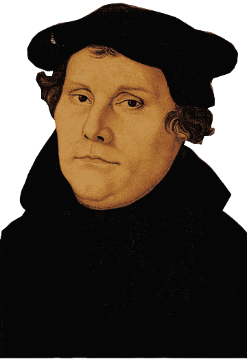

While Martin Luther was not the first person to question the practices and theology of the Catholic Church, he was the first to successfully raise public awareness and spark a movement to split from the Catholic Church. He became convicted to do something about the Catholic Church after studying the New Testament and realizing that contrary to what the Church taught, salvation comes through faith, not through works.
In 1517, Luther nailed his famous list of ninety-five discussion points on the door to the Castle Church in Wittenberg, creating much debate surrounding the practices of the Church. He called out issues such as the selling of indulgences by the Church, the idea of the pope “forgiving” sins, and the corruption within the leadership of the Church. After being declared a heretic and banished from Germany, he lived in the Wartburg Castle for a year until emerging to lead the movement he instigated.
